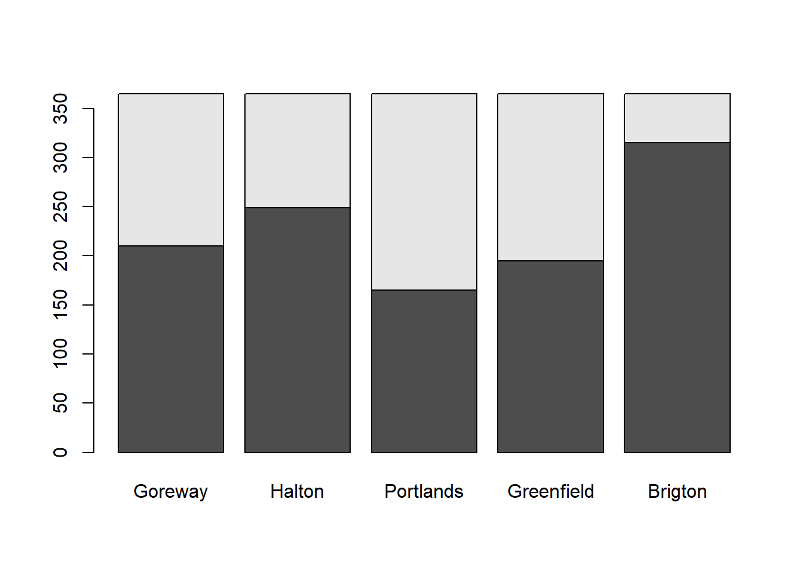
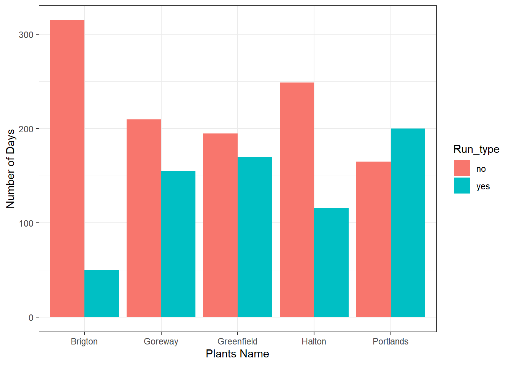
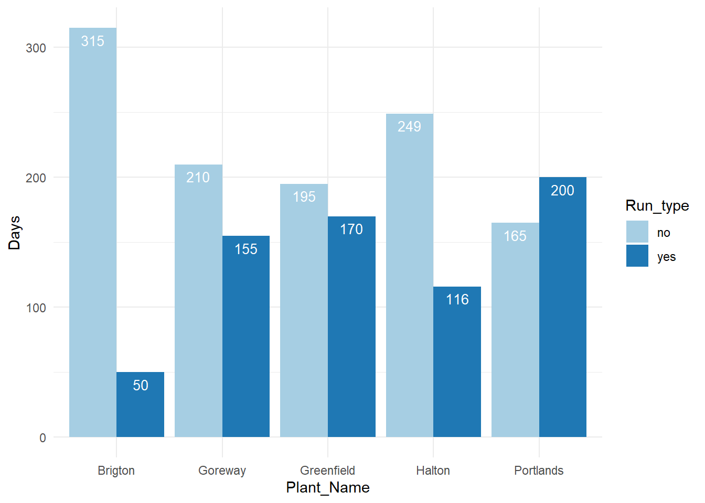

library(readxl)
library(lubridate)
library(dplyr)
library(tidyr)Natural gas combine cycle plant generation depends upon market demand . Attemp has been made to calculate the number of days plant was supplying power to grid.It is a first attempt for a comparitive study with counting wind generating days
G14<-read_excel("GOC-2014.xlsx")G14$Date <- as.Date(G14$Date, format = "%Y-%m-%d") # Changing to Date format
Dz_14Total<-G14 %>% group_by(Date) %>% summarize(Total_2014_Gen=sum(`TOTAL`),n=n())
Dz_14Goreway<-G14 %>% group_by(Date) %>% summarize(Goreway_2014_Total=sum(`SITHE GOREWAY`),n=n())
Dz_14Halton<-G14 %>% group_by(Date) %>% summarize(Halton_2014_Total=sum(HALTONHILLS),n=n())
Dz_14Portland<-G14 %>% group_by(Date) %>% summarize(Portlands_2014_Total=sum(PORTLANDS),n=n())
Dz_14Greenfeild<-G14 %>% group_by(Date) %>% summarize(GEC_2014_Total=sum(`GREENFIELD ENERGY CENTRE`),n=n())
Dz_14Brighton<-G14 %>% group_by(Date) %>% summarize(Brigton_2014_Total=sum(`BRIGHTON BEACH`),n=n())
head(Dz_14Total)## # A tibble: 6 x 3
## Date Total_2014_Gen n
## <date> <dbl> <int>
## 1 2014-01-01 440362 24
## 2 2014-01-02 515174 24
## 3 2014-01-03 529855 24
## 4 2014-01-04 480374 24
## 5 2014-01-05 424395 24
## 6 2014-01-06 471441 24Dz_14GB<-cbind(Dz_14Total[,-3],Dz_14Goreway[,2],Dz_14Halton[,2],Dz_14Portland[,2],Dz_14Greenfeild[,2],Dz_14Brighton[,2])
head(Dz_14GB)## Date Total_2014_Gen Goreway_2014_Total Halton_2014_Total
## 1 2014-01-01 440362 3114 3056
## 2 2014-01-02 515174 15335 12791
## 3 2014-01-03 529855 18671 17080
## 4 2014-01-04 480374 11042 9120
## 5 2014-01-05 424395 5903 7052
## 6 2014-01-06 471441 5443 14522
## Portlands_2014_Total GEC_2014_Total Brigton_2014_Total
## 1 2052 6464 0
## 2 7465 15183 3067
## 3 11493 19766 5626
## 4 6476 8593 0
## 5 2475 6196 0
## 6 6034 9225 0Checking for missing values
any(is.na(Dz_14GB))## [1] FALSEsum(is.na(Dz_14GB))## [1] 0colSums(is.na(Dz_14GB)) ## Date Total_2014_Gen Goreway_2014_Total
## 0 0 0
## Halton_2014_Total Portlands_2014_Total GEC_2014_Total
## 0 0 0
## Brigton_2014_Total
## 0nrow(Dz_14GB)## [1] 365a<-na.omit(Dz_14GB)
any(is.na(a))## [1] FALSEGoreway_U_Status_14<-cut(Dz_14Goreway$Goreway_2014_Total,breaks = c(0,100,10000),labels = c(0,1))
Goreway_U_Status_14<-cbind(Dz_14Goreway,Goreway_U_Status_14)
any(is.na(Goreway_U_Status_14))## [1] TRUEGoreway_U_Status_14[is.na(Goreway_U_Status_14)]=0
head(Goreway_U_Status_14)## Date Goreway_2014_Total n Goreway_U_Status_14
## 1 2014-01-01 3114 24 1
## 2 2014-01-02 15335 24 0
## 3 2014-01-03 18671 24 0
## 4 2014-01-04 11042 24 0
## 5 2014-01-05 5903 24 1
## 6 2014-01-06 5443 24 1Counting of Running/Notrunning
library(plyr)
aa_G_14<-count(Goreway_U_Status_14,"Goreway_U_Status_14")
names(aa_G_14)[1]="Running_Status"
names(aa_G_14)[2]="Goreway_Running_Frequency"
aa_G_14## Running_Status Goreway_Running_Frequency
## 1 0 210
## 2 1 155Halton_U_Status_14<-cut(Dz_14Halton$Halton_2014_Total,breaks = c(0,100,10000),labels = c(0,1))
Halton_U_Status_14<-cbind(Dz_14Halton,Halton_U_Status_14)
any(is.na(Halton_U_Status_14))## [1] TRUEHalton_U_Status_14[is.na(Halton_U_Status_14)]=0
##head(Halton_U_Status_14)4
aa_H_14<-count(Halton_U_Status_14,"Halton_U_Status_14")
names(aa_H_14)[1]="Running_Status"
names(aa_H_14)[2]="Halton_Running_Frequency"
aa_H_14## Running_Status Halton_Running_Frequency
## 1 0 249
## 2 1 116Portland_U_Status_14<-cut(Dz_14GB$Portlands_2014_Total,breaks = c(0,100,10000),labels = c(0,1))
Portland_U_Status_14<-cbind(Dz_14Portland,Portland_U_Status_14)
any(is.na(Portland_U_Status_14))## [1] TRUEPortland_U_Status_14[is.na(Portland_U_Status_14)]=0
##head(Portland_U_Status_14)
aa_P_14<-count(Portland_U_Status_14,"Portland_U_Status_14")
names(aa_P_14)[1]="Running_Status"
names(aa_P_14)[2]="Portland_U_Status_14"
aa_P_14## Running_Status Portland_U_Status_14
## 1 0 165
## 2 1 200Greenfield_U_Status_14<-cut(Dz_14GB$GEC_2014_Total,breaks = c(0,100,10000),labels = c(0,1))
Greenfield_U_Status_14<-cbind(Dz_14Greenfeild,Greenfield_U_Status_14)
any(is.na(Greenfield_U_Status_14))## [1] TRUEGreenfield_U_Status_14[is.na(Greenfield_U_Status_14)]=0
##head(Greenfield_U_Status_14)
aa_GEC_14<-count(Greenfield_U_Status_14,"Greenfield_U_Status_14")
names(aa_GEC_14)[1]="Running_Status"
names(aa_GEC_14)[2]="Greenfield_U_Status_14"
aa_GEC_14## Running_Status Greenfield_U_Status_14
## 1 0 195
## 2 1 170Brigton_Beach_U_Status_14<-cut(Dz_14GB$Brigton_2014_Total,breaks = c(0,100,10000),labels = c(0,1))
Brigton_Beach_U_Status_14<-cbind(Dz_14Brighton,Brigton_Beach_U_Status_14)
any(is.na(Brigton_Beach_U_Status_14))## [1] TRUEBrigton_Beach_U_Status_14[is.na(Brigton_Beach_U_Status_14)]=0aa_BB_14<-count(Brigton_Beach_U_Status_14,"Brigton_Beach_U_Status_14")
names(aa_BB_14)[1]="Running_Status"
names(aa_BB_14)[2]="Brigton_Beach_U_Status_14"
aa_BB_14## Running_Status Brigton_Beach_U_Status_14
## 1 0 315
## 2 1 50U_R_Status_14<-cbind(aa_G_14,aa_H_14[,2],aa_P_14[,2],aa_GEC_14[,2],aa_BB_14[,2])
names(U_R_Status_14)[2]="Goreway"
names(U_R_Status_14)[3]="Halton"
names(U_R_Status_14)[4]="Portlands"
names(U_R_Status_14)[5]="Greenfield"
names(U_R_Status_14)[6]="Brigton"Barplot
head(U_R_Status_14)## Running_Status Goreway Halton Portlands Greenfield Brigton
## 1 0 210 249 165 195 315
## 2 1 155 116 200 170 50count<-as.matrix(U_R_Status_14[,-1])
uk<-c("0","1")
barplot(count) ### ggplot
library(ggplot2)
Plant_Name <-rep(c("Goreway", "Halton", "Portlands", "Greenfield", "Brigton"), 2)
no<-c(U_R_Status_14[1,2],U_R_Status_14[1,3],U_R_Status_14[1,4],U_R_Status_14[1,5],U_R_Status_14[1,6])
yes<-c(U_R_Status_14[2,2],U_R_Status_14[2,3],U_R_Status_14[2,4],U_R_Status_14[2,5],U_R_Status_14[2,6])
Days <-c(no, yes)
Run_type <-c(rep("no", 5), rep("yes",5))
mydata <-data.frame(Plant_Name, Days)
mydata## Plant_Name Days
## 1 Goreway 210
## 2 Halton 249
## 3 Portlands 165
## 4 Greenfield 195
## 5 Brigton 315
## 6 Goreway 155
## 7 Halton 116
## 8 Portlands 200
## 9 Greenfield 170
## 10 Brigton 50p <-ggplot(mydata, aes(Plant_Name, Days))
p +geom_bar(stat= "identity",aes(fill=Run_type),position="dodge")+xlab("Plants Name")+ylab("Number of Days")+theme_bw() ### Labels to a dodged barplot
ggplot(data=mydata, aes(x=Plant_Name, y=Days, fill=Run_type)) +
geom_bar(stat="identity", position=position_dodge())+
geom_text(aes(label=Days), vjust=1.6, color="white",
position = position_dodge(0.9), size=3.5)+
scale_fill_brewer(palette="Paired")+
theme_minimal()